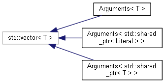
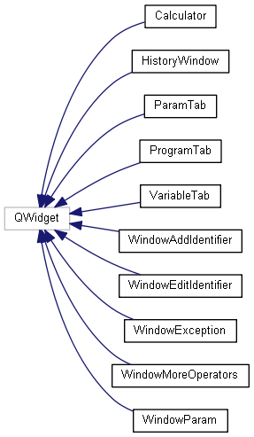
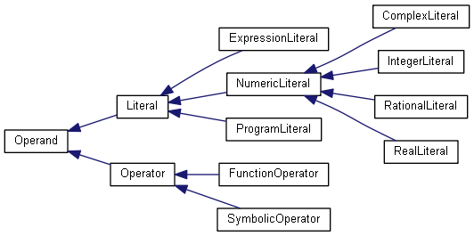
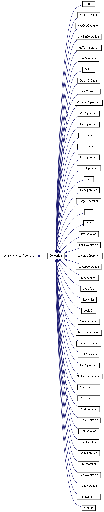
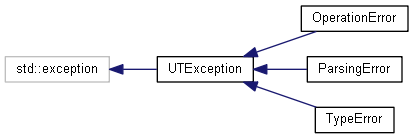

UTComputer
2.0
A Calculator.
Page principale
Espaces de nommage
Classes
Fichiers
Liste des classes
Index des classes
Hiérarchie des classes
Membres de classe
Hiérarchie des classes
Aller à la hiérarchie des classes en mode texte





Généré le Lundi 13 Juin 2016 01:32:29 pour UTComputer par
1.8.11
 1.8.11
1.8.11